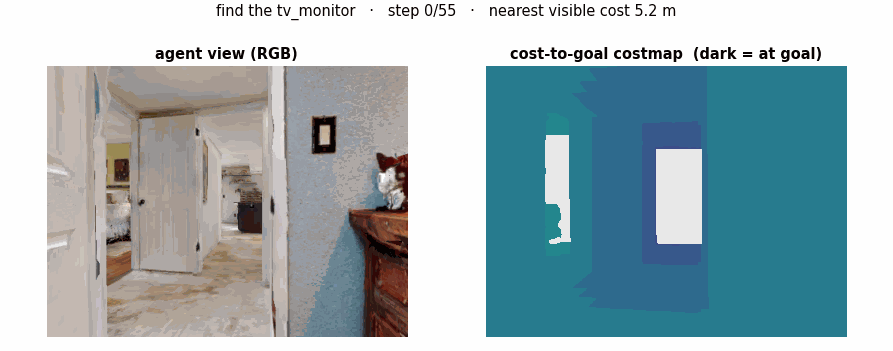
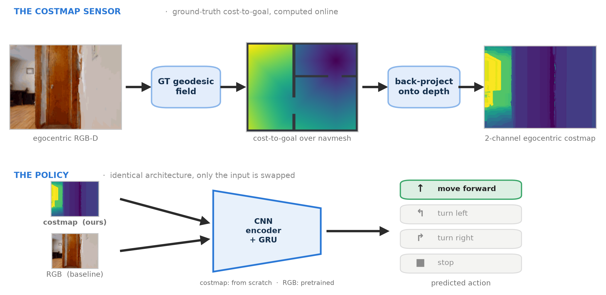
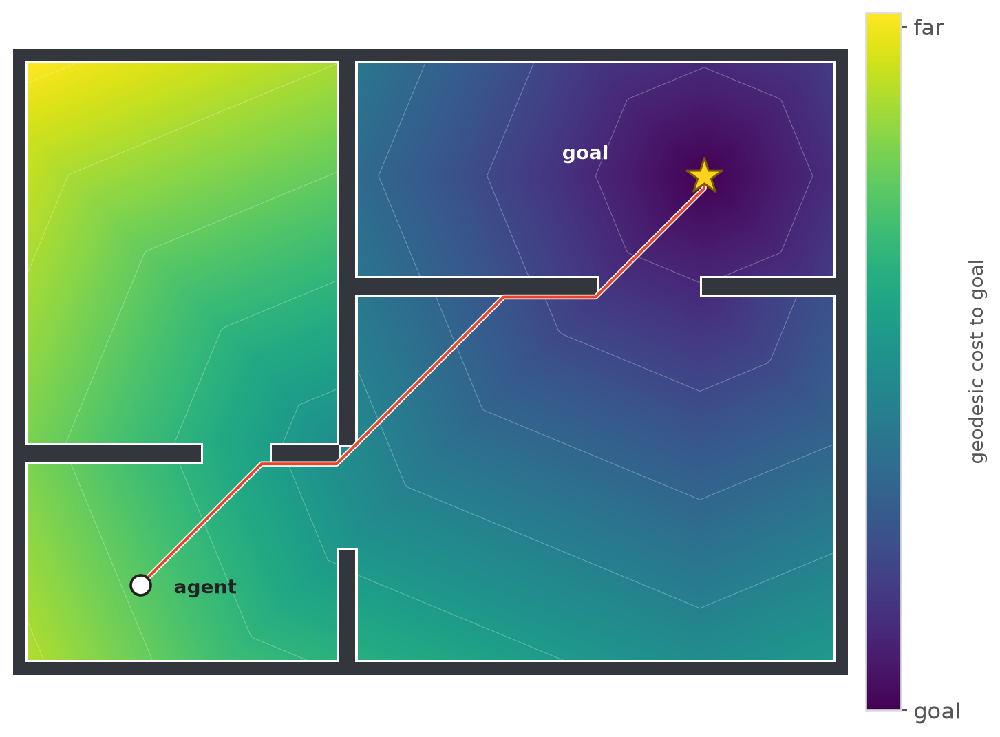
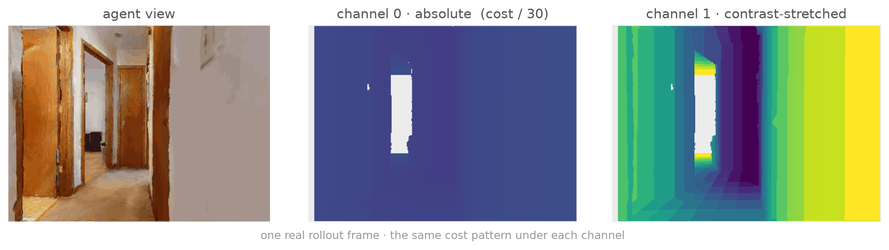
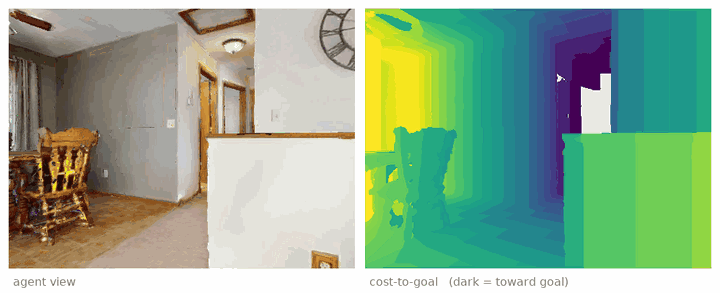
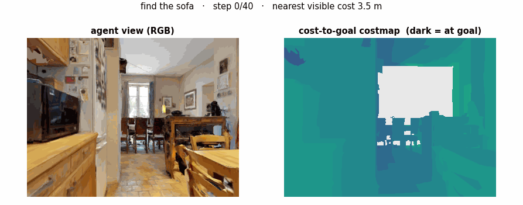
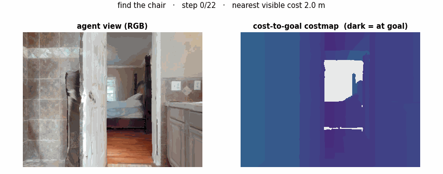
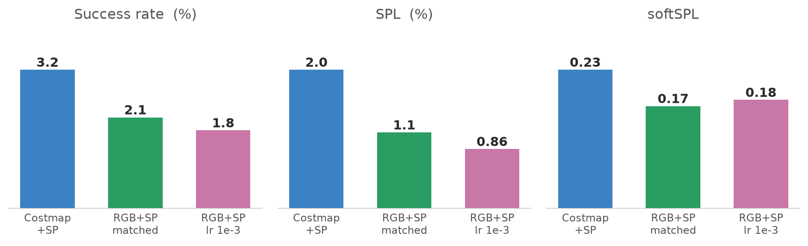
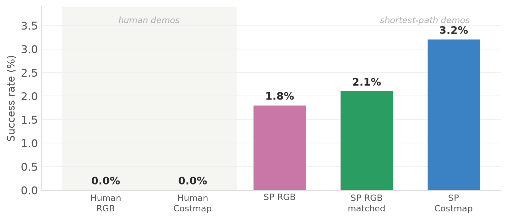

ObjectGoal Navigation · Imitation Learning
Robotics Research Center (RRC) · Internship Project
Does conditioning ObjectNav behavior cloning on a ground-truth geodesic costmap instead of RGB change what a policy can learn across human and shortest-path demonstrations? Basically trying to see how policy acts differently when we exchange RGB input in PIRLNav pipeline with WayPixel costmap inspired by MASt3R-Nav and eventually training a WayPixel costmap conditioned RL policy.

How well an agent navigates depends heavily on the representation it acts on. PIRLNav learns ObjectNav end-to-end by behavioral cloning of RGB demonstrations of hm3d datset then finetuning with RL. MASt3R-Nav showed how "Waypixel Costmap" a dense pixel-level costmap based on relative geometry enables a highly capable navigation system by training a controller conditioned on it to predict a trajectory rollout. So we asked a simple question - If a costmap is that good to act on, what happens when PIRLNav is conditioned on one instead of RGB?
To test the input on its own, we built a costmap-conditioned PIRLNav that sees a ground-truth (oracle) geodesic costmap, and put it against an RGB baseline at a matched budget. We ran the comparison under two teachers. On human demonstrations, both inputs fail the same way on val data, the limit is the teacher(human demostrations are more exploratory so need longer training) and the budget(our 0.8 epoch vs papers 33 epochs). On shortest-path demonstrations, which are the very signal a costmap encodes, turns out the costmap beats RGB on every metric.
Absolute performance stays well below PIRLNav’s, since everything here ran on one GPU for under an epoch. But the matched-budget comparison is clean, and it points to one idea: the representation you condition on doesn’t just change how well a policy does, it changes which teachers it can learn from at all.
The rest of this page is how we got there: first the costmap sensor itself, then the two experiments which gave two very different answers.
The basic idea is that instead of an RGB image, we hand the policy a picture of how far every visible point is from the goal, i.e. our costmap. Building it takes two steps. First, offline, we compute the true geodesic distance from every navigable spot in the house to the nearest goal. Second, we use the agent’s depth camera: for each pixel it already knows the distance from the camera to whatever that pixel is looking at (a wall, the floor, a chair leg), so we project every pixel back out into the world and get the exact 3D point in the house that pixel is seeing. We do this for all the pixels, turning the flat depth image into a cloud of 3D points. We then give each of those 3D points its pre-computed geodesic distance, and that becomes the pixel’s value. That is our egocentric costmap, and it is what our policy sees in place of RGB.


Why two channels. Our first version used one channel, scaled by the biggest distance in the whole house. That was a mistake. Inside a single frame the goal-ward gradient only covers a few percent of the range, so it looks almost flat. The encoder trains from scratch, and it just ignored it, so the policy fell back to guessing. Two channels fixed it. Channel 0 keeps the raw distance, so the agent knows how far the goal is and when to stop. Channel 1 stretches each frame to full contrast, so the direction to the goal pops out. One says how far, the other says which way.

Four rollouts in houses the policy never saw during training. In each one, the left is the agent’s first-person view and the right is the live costmap over that same view. Dark points the way to the goal, and the agent just keeps walking downhill on it until it arrives.



That is what descending the costmap looks like when it is done perfectly — the behaviour we want a policy to copy. So the whole project really comes down to one question: can a policy actually learn to do this? We tried it with two different teachers, and they did not agree.
Phase 1 · Human demonstrations
Both arms were trained by BC on human demos at a matched 8M-frame budget (effective batch 16,320 ≈ the paper’s, via gradient accumulation on a single 16 GB GPU). Training fit was healthy and near-identical (action accuracy ~0.74) — but on the full 1000-episode HM3D-v2 val split, both scored 0.0% success:
| Phase · Teacher | Input | Train acc. | Success | SPL | softSPL |
|---|---|---|---|---|---|
| 1 · Human | RGB | 0.744 | 0.0% | 0.0% | 0.129 |
| 1 · Human | Costmap (2-ch) | 0.744 | 0.0% | 0.0% | 0.108 |
| Published reference | PIRLNav · 77k human demos | — | 64.1% | 27.1% | — |
An oracle costmap did not collapse the difficulty here — both inputs failed identically on unseen scenes. The leading interpretation: with wandering human demos, the bottleneck is the teacher and the budget, not the input. (BC punishes navigating better than the teacher, and at ~0.8 epoch neither input has learned to generalize.) The lab server was lost at the internship’s end; everything below was rebuilt from scratch on rented GPUs.
But all of this leaned on human demonstrations — and that turned out to be the catch. What if the teacher, not the input, was the thing holding both arms back? Phase 2 puts exactly that to the test.
Phase 2 · Shortest-path demonstrations
Shortest-path (SP) demos beeline to the goal using privileged geodesic information. PIRLNav shows they’re a terrible teacher for RGB (6.4% vs 64.1%) — the policy can’t see the privileged signal the teacher follows. But the costmap is that signal, so the prediction is an interaction effect: SP demos should stay bad for RGB but become more learnable through the costmap. Both arms were retrained on SP demos at the same 8M-frame budget and evaluated on the same held-out split.

The takeaway. The input the policy sees doesn’t move the ceiling — but it changes which teacher it can learn from. Under shortest-path demos the costmap beats RGB on every metric (3.2% vs 2.1% success, 2.0% vs 1.1% SPL, 0.225 vs 0.166 softSPL). Under human demos both sit at 0% — a budget and perception limit the costmap can’t lift by itself.
Full 1000-episode HM3D-v2 val, deterministic actions, matched 8M-frame budget (~0.8 epoch). Best checkpoint per arm.

| Phase · Teacher | Input | Success | SPL | softSPL |
|---|---|---|---|---|
| 1 · Human | RGB | 0.0% | 0.0% | 0.129 |
| 1 · Human | Costmap (2-ch) | 0.0% | 0.0% | 0.108 |
| 2 · Shortest-path | RGB (lr 1e-3) | 1.8% | 0.86% | 0.176 |
| 2 · Shortest-path | RGB (matched 5e-4) | 2.1% | 1.10% | 0.166 |
| 2 · Shortest-path | Costmap (2-ch) | 3.2% | 2.01% | 0.225 |
| Reference — PIRLNav paper: human demos 64.1% / 27.1%; shortest-path demos 6.4% / 5.0%. | ||||
Phase 1 shows the ceiling (both inputs → 0% on human demos); Phase 2 isolates the costmap’s contribution under a cleaner teacher — a consistent win on every metric.
The costmap-vs-RGB result is clear, but every arm sits far below the paper’s 64%. Three entangled causes — none the costmap can fix on its own:
~0.8 epoch vs the paper’s ~33 (~500M steps on 64 GPUs). The LR decays to ~0 by 8M steps, forcing learning to stop before even one full pass.
Human demos wander (perfect imitation ≈ SPL 0.47); BC punishes beating the teacher, so a privileged input has little room. SP demos remove this — and the costmap advantage appears.
FOV / 5 m depth / low resolution. The costmap is back-projected through the same limited depth camera, so it inherits the ceiling — it can’t show a goal beyond the horizon.
| Training budget | PIRLNav (BC) | This work |
|---|---|---|
| Steps / frames | ~500M | 8M |
| GPUs | 64 | 1 |
| Demos | 77k human | ~64k SP / human |
| Epochs over demos | ~33 | ~0.8 |
Same LR (1e-3, linearly decayed). Both arms share the identical budget, so the costmap-vs-RGB comparison holds regardless of this ceiling.
Rebuilding the stack on rented GPUs and training the costmap arm to completion
surfaced several failure modes, each fixed: the 1-ch costmap being ignored (→ the
2-channel transform); NaN divergence (→ lr 5e-4 + grad-clip 0.1 + a non-finite-gradient
guard); field-build hangs on pathological navmeshes (→ offline precompute in
hard-terminate()-able subprocesses, loaded from disk); and intermittent CUDA
crashes (→ a self-healing wrapper that auto-resumes from the last checkpoint on any crash
and kills+resumes on any hang — the final run recovered 3 crashes across 4 attempts to
reach 25k updates automatically).
Future work. Lift the ceiling (wider FOV, deeper depth, higher-res costmap, a spatial map) and re-run the comparison; train at full budget (multiple epochs) to quantify the undertraining gap. Note the costmap encoder trains from scratch while RGB rides a pretrained encoder — an asymmetry that disfavors the costmap, so its win is if anything understated.
@inproceedings{ramrakhya2023pirlnav,
title = {PIRLNav: Pretraining with Imitation and RL Finetuning for ObjectNav},
author = {Ramrakhya, Ram and Batra, Dhruv and Wijmans, Erik and Das, Abhishek},
booktitle = {CVPR},
year = {2023}
}
@misc{mast3rnav,
title = {MASt3R-Nav: WayPixel Costmaps for Navigation},
note = {https://mast3r-nav.github.io/}
}
All code, scripts, eval logs and per-checkpoint results are in the
repository (exp2_sp_costmap/);
every metric is logged to Weights & Biases.